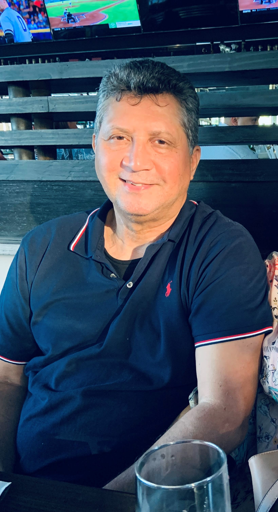

Home
Piratas
Tainos
Contacts

Nelson E.Subervi
Estudios Realizados:
2014
Historiador postgrado en historia del Caribe de la Facultad Latino Americana de Ciencias Sociales (Flasco-Costa Rica)
2011
Liceado en Derecho, Universidad de la Tercera Edad (UTE)
Experiencias Laborales:
2016
Director Ejecutivo de la Fundación para la promoción de historia y la Cultura Dominicana (FHICUD)
2010
Ejecutivo de edición de Ediciones Discovery
2005
Fundador del Museo de Arte Pre-colombino
Libro Publicado
Año publicado
Los Realest Piratas del Caribe
2016
Tainos sus huellas en el Caribe
2005
los exploradores serie de libros infantiles sobre Historia Colonial
2004
Republica Dominicana, libro para el mercado turístico
2004